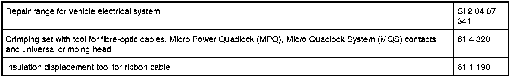

61 13 ... Treating Cables and Fiber-Optic Cables
61 13 ... - Treating cables and fiber-optic cables
Special tools required:
- 61 1 190 61 1 190 Pliers
- 61 4 320 61 4 320 Crimping Set with Pliers
Note:
Special tools referred to in the repair instructions below are contained in the following special tool kits:

Subject of repair instructions
- Special tools for wiring harness repairs Tools and Equipment
- Cutting to length and stripping insulation from cables 61 13 ... Cutting to Length and Stripping Insulation From Cables
- Crimping stop parts (contacts)
- Butt connector for repairing a plug connection 61 13 ... Butt Connector For Repairing A Plug Connection
- Fan connector for retrofitting/repairs Installing Fan Type Connector for Retrofitting/Repairs
- Aerial elbow plug on radio receiver
- Cutting to length and stripping insulation from optical fibers 61 13 ... Cutting Off, Stripping Insulation and Cutting Optical Fibres to Length
- Crimping optical fibers 61 13 ... Crimping Optical Fibers
- Insulation displacement connector for repairing ribbon cables 61 13 ... Repairing Ribbon Cables